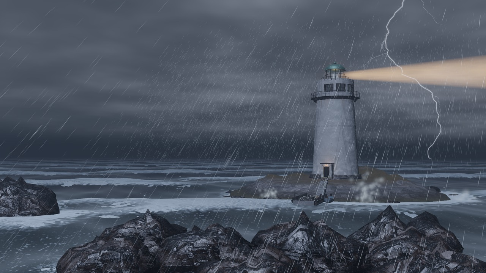

The Last Light
Нощта на 14 срещу 15 ноември 1971 г. над фар във Външните Хебриди бушува буря. Вие сте пазачът и поддържате светлината, докато по радиото глас назовава траулер, потънал под този фар преди осемнайсет години. Наративна игра от първо лице; участие в „Джон Атанасов“ 2026/27, направление 3 „Разпределени приложения“.
- Отвори презентацията онлайн · Прегледай PDF · Офлайн презентация (ZIP)
- Трейлър (1:17)
- Изтегли играта (издание v1.0.0, macOS и Windows)
- Хранилище с изходния код и инструкции
- Материали за конкурса
Ориентировъчно време за едно изиграване: около 65–110 минути (типично около 80), без кредитите (още около 1–2 минути; пропускат се с Esc).
Изчислена оценка от два завършени маршрута със спасен кораб и допускания за първо изиграване; метод и ограничения. R7 е локална игра за един играч, без мрежов сървър или синхронизация.
Текстът в играта е на английски; в играта няма озвучаване.